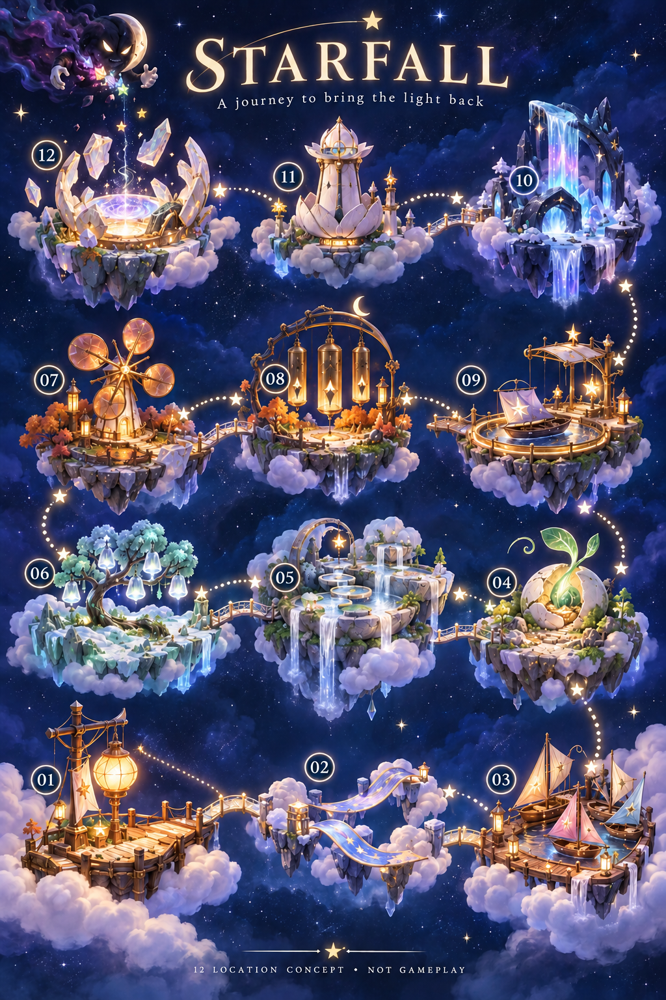
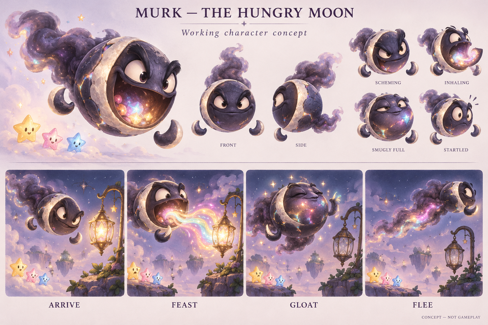

Concept art — not gameplay. The illustration previews the destinations mostly restored; it does not show a saved run. Select a numbered destination or use the location menu to explore its proposed restoration states.
These buttons show written concept notes for 0–100%. This viewer shows written states, not the native paintings; the overview art stays unchanged.
The finishing moment
How the journey continues
Puzzle design question
A small story beat
Murk,
the Hungry Moon.
A vain celestial glutton who wants every beautiful light for himself. His crescent rim, floating hands and smoky tail make him recognizable in a quick entrance.
Arrive → feast → gloat → flee. Stolen colors glow inside his moonstone body. He consumes ambient starlight; the little star helpers are not his food.

Generated character concept, not an animated or production-ready asset. The user approved Murk as illustrated. This sheet owns his appearance; future production should match it. Detailed motives and the ending are developed in the game bible.
A neighborhood worth bringing back
These places can be the stars’ homes and shared gardens, workshops and routes. The new game bible develops that idea into a connected community, with a four-act journey and a complete ending. A separate traveler hero remains an open possibility; Murk and the twelve locations are the chosen foundation.